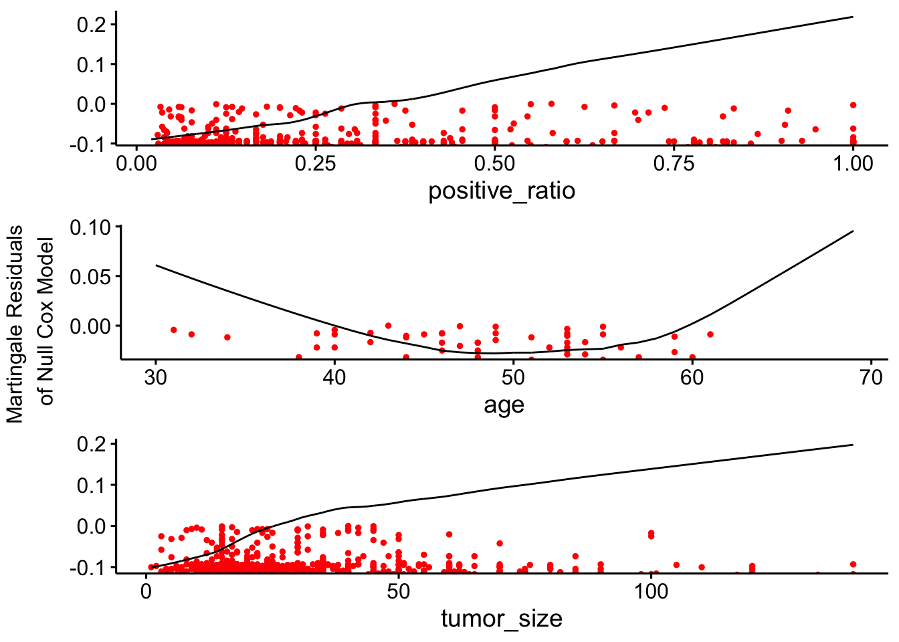
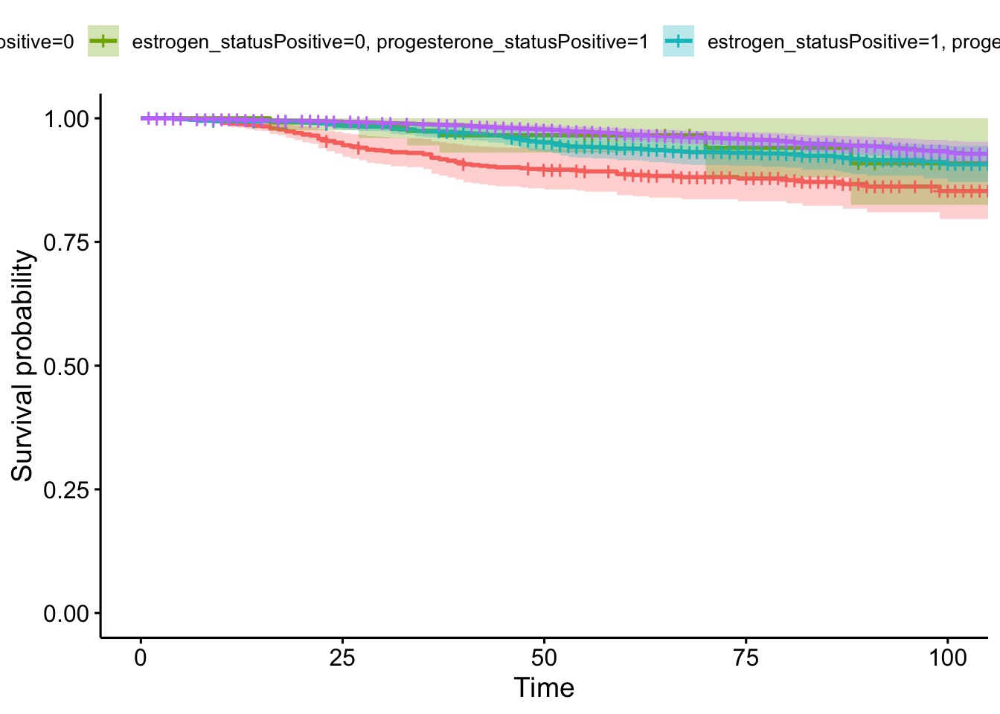

BM project
Data Import
data_df = read_csv("dataset/Project_2_data.csv")|>
janitor::clean_names()|>
subset(select = -c(survival_months))|>
mutate(grade = ifelse(grade == "anaplastic; Grade IV", 4, grade))|>
mutate(
t_stage = factor(t_stage),
race = factor(race),
marital_status = factor(marital_status),
n_stage = factor(n_stage),
x6th_stage = factor(x6th_stage),
differentiate = factor(differentiate),
a_stage = factor(a_stage),
estrogen_status = factor(estrogen_status),
progesterone_status = factor(progesterone_status),
status = factor(status),
grade = factor(grade)
)## Rows: 4024 Columns: 16
## ── Column specification ───────────────────────────────────────────────────────────────
## Delimiter: ","
## chr (11): Race, Marital Status, T Stage, N Stage, 6th Stage, differentiate, ...
## dbl (5): Age, Tumor Size, Regional Node Examined, Reginol Node Positive, Su...
##
## ℹ Use `spec()` to retrieve the full column specification for this data.
## ℹ Specify the column types or set `show_col_types = FALSE` to quiet this message.colnames(data_df)## [1] "age" "race" "marital_status"
## [4] "t_stage" "n_stage" "x6th_stage"
## [7] "differentiate" "grade" "a_stage"
## [10] "tumor_size" "estrogen_status" "progesterone_status"
## [13] "regional_node_examined" "reginol_node_positive" "status"EDA
age_df = data_df|>
group_by(age) %>%
summarise(n=n())
age_df %>%
ggplot(aes(x = age, y = n)) +
geom_bar(stat = "identity") +
theme_minimal() +
labs(x = "age", y = "Count",
title = "Distribution by age")race_df = data_df|>
group_by(race) %>%
summarise(n=n())
race_df %>%
ggplot(aes(x = race, y = n, fill = race)) +
geom_bar(stat = "identity") +
theme_minimal() +
labs(x = "race", y = "Count", fill = "race",
title = "Distribution by race")marital_df = data_df|>
group_by(marital_status) %>%
summarise(n=n())
marital_df %>%
ggplot(aes(x = marital_status, y = n, fill = marital_status)) +
geom_bar(stat = "identity") +
theme_minimal() +
labs(x = "marital status", y = "Count", fill = "marital status",
title = "Distribution by marital status")t_df = data_df|>
group_by(t_stage) %>%
summarise(n=n())
t_df %>%
ggplot(aes(x = t_stage, y = n, fill = t_stage)) +
geom_bar(stat = "identity") +
theme_minimal() +
labs(x = "t_stage", y = "Count", fill = "t_stage",
title = "Distribution by t_stage")n_df = data_df|>
group_by(n_stage) %>%
summarise(n=n())
n_df %>%
ggplot(aes(x = n_stage, y = n, fill = n_stage)) +
geom_bar(stat = "identity") +
theme_minimal() +
labs(x = "n_stage", y = "Count", fill = "n_stage",
title = "Distribution by n_stage")x6_df = data_df|>
group_by(x6th_stage) %>%
summarise(n=n())
x6_df %>%
ggplot(aes(x = x6th_stage, y = n, fill = x6th_stage)) +
geom_bar(stat = "identity") +
theme_minimal() +
labs(x = "x6th_stage", y = "Count", fill = "x6th_stage",
title = "Distribution by x6th_stage")a_df = data_df|>
group_by(a_stage) %>%
summarise(n=n())
a_df %>%
ggplot(aes(x = a_stage, y = n, fill = a_stage)) +
geom_bar(stat = "identity") +
theme_minimal() +
labs(x = "a_stage", y = "Count", fill = "a_stage",
title = "Distribution by a_stage")grade_df = data_df|>
group_by(grade) %>%
summarise(n=n())
grade_df %>%
ggplot(aes(x = grade, y = n, fill = grade)) +
geom_bar(stat = "identity") +
theme_minimal() +
labs(x = "grade", y = "Count", fill = "grade",
title = "Distribution by grade")diff_df = data_df|>
group_by(differentiate) %>%
summarise(n=n())
diff_df %>%
ggplot(aes(x = differentiate, y = n, fill = differentiate)) +
geom_bar(stat = "identity") +
theme_minimal() +
labs(x = "differentiate", y = "Count", fill = "differentiate",
title = "Distribution by differentiate")
size_df = data_df|>
group_by(tumor_size) %>%
summarise(n=n())
size_df %>%
ggplot(aes(x = tumor_size, y = n)) +
geom_bar(stat = "identity") +
theme_minimal() +
labs(x = "tumor size", y = "Count",
title = "Distribution by tumor size")estrogen_df = data_df|>
group_by(estrogen_status) %>%
summarise(n=n())
estrogen_df %>%
ggplot(aes(x = estrogen_status, y = n, fill = estrogen_status)) +
geom_bar(stat = "identity") +
theme_minimal() +
labs(x = "estrogen status", y = "Count", fill = "estrogen status",
title = "Distribution by estrogen status")pro_df = data_df|>
group_by(progesterone_status) %>%
summarise(n=n())
pro_df %>%
ggplot(aes(x = progesterone_status, y = n, fill = progesterone_status)) +
geom_bar(stat = "identity") +
theme_minimal() +
labs(x = "progesterone status", y = "Count", fill = "progesterone status",
title = "Distribution by progesterone status")nodeExam_df = data_df|>
group_by(regional_node_examined) %>%
summarise(n=n())
nodeExam_df %>%
ggplot(aes(x = regional_node_examined, y = n)) +
geom_bar(stat = "identity") +
theme_minimal() +
labs(x = "regional node examined", y = "Count",
title = "Distribution by regional node examined")nodePos_df = data_df|>
group_by(reginol_node_positive) %>%
summarise(n=n())
nodePos_df %>%
ggplot(aes(x = reginol_node_positive, y = n)) +
geom_bar(stat = "identity") +
theme_minimal() +
labs(x = "regional node positive", y = "Count",
title = "Distribution by regional node positive")Preparation before Modeling
check colinear
logistic_model = glm(status ~ age + race + marital_status + t_stage + n_stage + x6th_stage + differentiate + grade + a_stage + tumor_size + estrogen_status + progesterone_status + regional_node_examined + reginol_node_positive, data = data_df, family = binomial())summary(logistic_model)##
## Call:
## glm(formula = status ~ age + race + marital_status + t_stage +
## n_stage + x6th_stage + differentiate + grade + a_stage +
## tumor_size + estrogen_status + progesterone_status + regional_node_examined +
## reginol_node_positive, family = binomial(), data = data_df)
##
## Coefficients: (4 not defined because of singularities)
## Estimate Std. Error z value Pr(>|z|)
## (Intercept) -1.7760652 0.4874359 -3.644 0.000269 ***
## age 0.0241699 0.0056199 4.301 1.70e-05 ***
## raceOther -0.9235406 0.2486035 -3.715 0.000203 ***
## raceWhite -0.5097774 0.1618144 -3.150 0.001631 **
## marital_statusMarried -0.2102748 0.1417668 -1.483 0.138010
## marital_statusSeparated 0.6717802 0.3874652 1.734 0.082957 .
## marital_statusSingle -0.0677682 0.1750670 -0.387 0.698683
## marital_statusWidowed 0.0234528 0.2210320 0.106 0.915498
## t_stageT2 0.2821932 0.1953845 1.444 0.148656
## t_stageT3 0.5359069 0.3137751 1.708 0.087649 .
## t_stageT4 0.9542320 0.4500716 2.120 0.033991 *
## n_stageN2 0.6208066 0.2391834 2.596 0.009445 **
## n_stageN3 0.6910134 0.3007413 2.298 0.021579 *
## x6th_stageIIB 0.2143223 0.2318280 0.924 0.355232
## x6th_stageIIIA -0.0871350 0.2950089 -0.295 0.767716
## x6th_stageIIIB 0.0887019 0.5289101 0.168 0.866814
## x6th_stageIIIC NA NA NA NA
## differentiatePoorly differentiated 0.3884281 0.1049279 3.702 0.000214 ***
## differentiateUndifferentiated 1.3615636 0.5324917 2.557 0.010559 *
## differentiateWell differentiated -0.5367572 0.1840814 -2.916 0.003547 **
## grade2 NA NA NA NA
## grade3 NA NA NA NA
## grade4 NA NA NA NA
## a_stageRegional -0.0401504 0.2662370 -0.151 0.880128
## tumor_size 0.0002492 0.0039726 0.063 0.949990
## estrogen_statusPositive -0.7418514 0.1778875 -4.170 3.04e-05 ***
## progesterone_statusPositive -0.5860593 0.1276841 -4.590 4.43e-06 ***
## regional_node_examined -0.0358800 0.0071869 -4.992 5.96e-07 ***
## reginol_node_positive 0.0790803 0.0153636 5.147 2.64e-07 ***
## ---
## Signif. codes: 0 '***' 0.001 '**' 0.01 '*' 0.05 '.' 0.1 ' ' 1
##
## (Dispersion parameter for binomial family taken to be 1)
##
## Null deviance: 3444.7 on 4023 degrees of freedom
## Residual deviance: 2952.0 on 3999 degrees of freedom
## AIC: 3002
##
## Number of Fisher Scoring iterations: 5We noticed that there are Na in our coefficient, which might means existed collinearlity.
df_total_stage = data_df|>
mutate(
t_stage = as.character(t_stage),
n_stage = as.character(n_stage),
x6th_stage = as.character(x6th_stage),
stage = paste(t_stage, n_stage, x6th_stage, sep = "-")
)
unique(df_total_stage$stage)## [1] "T1-N1-IIA" "T2-N2-IIIA" "T3-N3-IIIC" "T2-N1-IIB" "T4-N3-IIIC"
## [6] "T3-N1-IIIA" "T1-N2-IIIA" "T2-N3-IIIC" "T1-N3-IIIC" "T3-N2-IIIA"
## [11] "T4-N1-IIIB" "T4-N2-IIIB"We could see that in our dataset, IIIC is collinear with N3, so this will be the reason why there is NA for IIIC. Also, base on research the x6th_stage was decided by t_stage and n_stage. So it is a redundant variable, we should delete this variable. (https://web2.facs.org/cstage0204/breast/Breast_qad.html)
df_total_grade = data_df|>
mutate(
differentiate = as.character(differentiate),
grade = as.character(grade),
grade_total = paste(differentiate, grade, sep = "-")
)
unique(df_total_grade$grade_total)## [1] "Poorly differentiated-3" "Moderately differentiated-2"
## [3] "Well differentiated-1" "Undifferentiated-4"Also we noticed that the grade and differentiate is linked, it is also a redundant variable.
logistic_model = glm(status ~ age + race + marital_status + t_stage + n_stage + differentiate + a_stage + tumor_size + estrogen_status + progesterone_status + regional_node_examined + reginol_node_positive, data = data_df, family = binomial())vif_result = vif(logistic_model)
data.frame(vif_result)|>
subset(select = -c(GVIF..1..2.Df..))|>
print()## GVIF Df
## age 1.108588 1
## race 1.063293 2
## marital_status 1.132295 4
## t_stage 4.299763 3
## n_stage 3.942346 2
## differentiate 1.119662 3
## a_stage 1.261191 1
## tumor_size 3.668392 1
## estrogen_status 1.477342 1
## progesterone_status 1.428392 1
## regional_node_examined 1.480852 1
## reginol_node_positive 4.249613 1We could see that all vif are lower than 5, which means low collinearity.
data_df = data_df|>
subset(select = -c(x6th_stage, differentiate))check nonlinear
Since this is logistic regression, we need to check whether the predictors and the Logit of response variable have a linear relationship.
logistic_model = glm(status ~ ., data = data_df, family = binomial())
data_df$prob = predict(logistic_model, type = "response")
numeric_df = data_df |>
dplyr::select_if(is.numeric)
predictors = colnames(numeric_df)
# Bind the logit and tidying the data for plot
numeric_df = numeric_df |>
mutate(logit = log(prob/(1-prob))) ggplot(numeric_df, aes(logit, age))+
geom_point(size = 0.5, alpha = 0.5) +
geom_smooth(method = "loess")+
labs(x = "logit", y = "age", title = "age vs logits")## `geom_smooth()` using formula = 'y ~ x'#ggsave("age_linear_check.jpg")ggplot(numeric_df, aes(logit, tumor_size))+
geom_point(size = 0.5, alpha = 0.5) +
geom_smooth(method = "loess") +
labs(x = "logit", y = "tumor size", title = "tumor size vs logits")## `geom_smooth()` using formula = 'y ~ x'#ggsave("tumor_size_linear_check.jpg")ggplot(numeric_df, aes(logit, regional_node_examined))+
geom_point(size = 0.5, alpha = 0.5) +
geom_smooth(method = "loess") +
labs(x = "logit", y = "number of regional node examined", title = "number of regional node examined vs logits")## `geom_smooth()` using formula = 'y ~ x'#ggsave("reginal_node_exm_linear_check.jpg")ggplot(numeric_df, aes(logit, reginol_node_positive))+
geom_point(size = 0.5, alpha = 0.5) +
geom_smooth(method = "loess") +
labs(x = "logit", y = "number of regional node being positive", title = "number of regional node beding positive vs logits")## `geom_smooth()` using formula = 'y ~ x'#ggsave("reginal_node_pos_linear_check.jpg")The regional_node_examined seems not linear with logits of the outcome, this is reasonable since this data is determined by examiner. This makes us think maybe this should be excluded from our model or we should change regional_node_examined and reginol_node_positive to one variable that show a ratio of reginol_node_positive/regional_node_examined
ggplot(numeric_df, aes(logit, reginol_node_positive/regional_node_examined))+
geom_point(size = 0.5, alpha = 0.5) +
geom_smooth(method = "loess") +
labs(x = "logit", y = "number of regional node being positive/regional node being examined", title = "positive ratio vs logits")## `geom_smooth()` using formula = 'y ~ x'#ggsave("positive_ratio_linear_check.jpg")We could see this ratio is linear with logit of the outcome. So this transformation benefit our analysis in both deal with non-linearity and also utilize the predictor reginol_node_positive.
We then use boxTidwell to test the linearlity, three continuous variables shows linear relationship with logit or outcome. All P-values larger than 0.05, which suggest linear relationship.
data_df = data_df|>
mutate(positive_ratio = reginol_node_positive/regional_node_examined)|>
subset(select = -c(reginol_node_positive, regional_node_examined))boxTidwell(prob ~ age + tumor_size + positive_ratio, ~ race + marital_status + t_stage + n_stage + grade + a_stage + estrogen_status + progesterone_status, data = data_df)## MLE of lambda Score Statistic (t) Pr(>|t|)
## age 1.34389 1.1183 0.26353
## tumor_size 1.55212 1.5205 0.12847
## positive_ratio 0.86844 -1.8476 0.06473 .
## ---
## Signif. codes: 0 '***' 0.001 '**' 0.01 '*' 0.05 '.' 0.1 ' ' 1
##
## iterations = 11
##
## Score test for null hypothesis that all lambdas = 1:
## F = 2.3195, df = 3 and 4000, Pr(>F) = 0.0734check outlier
hat_matrix = hatvalues(logistic_model)
threshold = 12*3/4024
data_hat_df = data_df|>
mutate(hat_values = hat_matrix)|>
mutate(potential_outlier = ifelse(hat_values >= threshold, 1, 0))cook_d = cooks.distance(logistic_model)
data_hat_cook_df = data_hat_df|>
mutate(cookd = cook_d)|>
mutate(influntial = ifelse(cookd >= 0.5, 1, 0))We see that there are no extreme outliers, so we just keep them in our model.
Model Fitting
Now we starts to decide our model. So obviously our baseline model will be logistic regression. To ensure the interpretability of the coefficient, we need to rescale our data. Tumor size, and age need to be rescale.
data_df$age = rescale(data_df$age)
data_df$tumor_size = rescale(data_df$tumor_size)
data_df = data_df|>
subset(select = -c(prob))baseline model
Firstly we will separate our dataset to train and test, then we will use 5-fold cv to fit our model
set.seed(100)
trainIndex = createDataPartition(data_df$status, p = 0.8,
list = FALSE,
times = 1)
train_df = data_df[trainIndex, ]
test_df = data_df[-trainIndex, ]
train_covariate = train_df|>
subset(select = -c(status))
test_covariate = test_df|>
subset(select = -c(status))ctrl = trainControl(method = "cv", number = 5)
baseline_model = train(status ~ ., data = train_df, method = "glm",
trControl = ctrl, family = "binomial")baseline_result = predict(baseline_model, newdata = test_df)
baseline_result = baseline_result|>
as.data.frame()|>
mutate(actual = test_df$status)confusionMatrix(data=pull(baseline_result, baseline_result), reference = pull(baseline_result, actual))## Confusion Matrix and Statistics
##
## Reference
## Prediction Alive Dead
## Alive 674 100
## Dead 7 23
##
## Accuracy : 0.8669
## 95% CI : (0.8415, 0.8896)
## No Information Rate : 0.847
## P-Value [Acc > NIR] : 0.06244
##
## Kappa : 0.256
##
## Mcnemar's Test P-Value : < 2e-16
##
## Sensitivity : 0.9897
## Specificity : 0.1870
## Pos Pred Value : 0.8708
## Neg Pred Value : 0.7667
## Prevalence : 0.8470
## Detection Rate : 0.8383
## Detection Prevalence : 0.9627
## Balanced Accuracy : 0.5884
##
## 'Positive' Class : Alive
## summary(baseline_model)##
## Call:
## NULL
##
## Coefficients:
## Estimate Std. Error z value Pr(>|z|)
## (Intercept) -1.94915 0.47295 -4.121 3.77e-05 ***
## age 0.81027 0.24168 3.353 0.000800 ***
## raceOther -0.68299 0.27215 -2.510 0.012087 *
## raceWhite -0.33875 0.18073 -1.874 0.060876 .
## marital_statusMarried -0.31971 0.15414 -2.074 0.038062 *
## marital_statusSeparated 0.39324 0.44145 0.891 0.373046
## marital_statusSingle -0.17551 0.19171 -0.915 0.359942
## marital_statusWidowed -0.14942 0.24399 -0.612 0.540289
## t_stageT2 0.43096 0.14647 2.942 0.003257 **
## t_stageT3 0.41743 0.29812 1.400 0.161453
## t_stageT4 0.85171 0.34128 2.496 0.012572 *
## n_stageN2 0.38679 0.13377 2.891 0.003835 **
## n_stageN3 0.73352 0.17799 4.121 3.77e-05 ***
## grade2 0.45498 0.20264 2.245 0.024755 *
## grade3 0.77509 0.21280 3.642 0.000270 ***
## grade4 1.38263 0.64271 2.151 0.031455 *
## a_stageRegional -0.08089 0.28492 -0.284 0.776489
## tumor_size 0.23582 0.61058 0.386 0.699331
## estrogen_statusPositive -0.88056 0.20126 -4.375 1.21e-05 ***
## progesterone_statusPositive -0.48155 0.14475 -3.327 0.000879 ***
## positive_ratio 1.18978 0.21108 5.637 1.73e-08 ***
## ---
## Signif. codes: 0 '***' 0.001 '**' 0.01 '*' 0.05 '.' 0.1 ' ' 1
##
## (Dispersion parameter for binomial family taken to be 1)
##
## Null deviance: 2756.7 on 3219 degrees of freedom
## Residual deviance: 2395.2 on 3199 degrees of freedom
## AIC: 2437.2
##
## Number of Fisher Scoring iterations: 5feature selection with interaction term
concat_predictors = function(input_vector) {
if (length(input_vector) == 1){
return(c())
}
n = length(input_vector)
result = character(0)
for (i in 1:(n - 1)) {
for (j in (i + 1):n) {
combination = paste(input_vector[i], input_vector[j], sep = ":")
result = c(result, combination)
}
}
return(result)
}all_single_predictors = c("age", "tumor_size", "positive_ratio", "race", "marital_status", "t_stage", "n_stage", "grade", "a_stage", "estrogen_status", "progesterone_status")
available_single_predictors = c("age", "tumor_size", "positive_ratio", "race", "marital_status", "t_stage", "n_stage", "grade", "a_stage", "estrogen_status", "progesterone_status")
available_interaction_term = c()
selected_features = c("positive_ratio")
best_model = glm(formula = status ~ positive_ratio, data = train_df, family = binomial())while (1) {
remaining_features = c(available_single_predictors, available_interaction_term)
candidate_models = list()
for (feature in remaining_features) {
formula = paste("status ~ ", paste(c(selected_features, feature), collapse = " + "), sep = "")
candidate_model = glm(formula, data = train_df, family = binomial())
candidate_models[[feature]] = candidate_model
}
best_candidate = candidate_models[[which.min(sapply(candidate_models, AIC))]]
if (AIC(best_candidate) < AIC(best_model)) {
best_model = best_candidate
formula = best_candidate$formula
char_selected_features = sub("^status ~\\s*", "", formula)
selected_features = unlist(strsplit(char_selected_features, "\\s*\\+\\s*"))
predictor_in_model = all_single_predictors[all_single_predictors %in% selected_features]
available_single_predictors = all_single_predictors[!all_single_predictors %in% selected_features]
available_interaction_term = concat_predictors(predictor_in_model)
available_interaction_term = available_interaction_term[!available_interaction_term %in% selected_features]
} else {
break
}
}summary(best_model)##
## Call:
## glm(formula = formula, family = binomial(), data = train_df)
##
## Coefficients:
## Estimate Std. Error z value Pr(>|z|)
## (Intercept) -4.111e+00 8.268e-01 -4.972 6.64e-07
## positive_ratio 1.769e+00 7.645e-01 2.313 0.020697
## estrogen_statusPositive 5.912e-02 8.047e-01 0.073 0.941427
## n_stageN2 5.302e-01 5.391e-01 0.984 0.325336
## n_stageN3 6.293e-01 7.851e-01 0.802 0.422828
## t_stageT2 1.946e+00 5.551e-01 3.506 0.000455
## t_stageT3 3.082e+00 7.098e-01 4.343 1.41e-05
## t_stageT4 3.182e+00 1.120e+00 2.841 0.004494
## grade2 9.588e-01 3.759e-01 2.551 0.010753
## grade3 1.441e+00 3.917e-01 3.677 0.000236
## grade4 -3.803e+02 1.005e+04 -0.038 0.969809
## age 8.479e-01 8.123e-01 1.044 0.296578
## progesterone_statusPositive -5.970e-01 4.460e-01 -1.339 0.180708
## raceOther -6.080e-01 7.655e-01 -0.794 0.426990
## raceWhite 4.068e-01 5.127e-01 0.793 0.427565
## estrogen_statusPositive:t_stageT2 -7.056e-01 4.445e-01 -1.587 0.112420
## estrogen_statusPositive:t_stageT3 -1.453e+00 5.632e-01 -2.579 0.009895
## estrogen_statusPositive:t_stageT4 -2.582e+00 9.980e-01 -2.587 0.009679
## n_stageN2:grade2 -3.074e-01 5.155e-01 -0.596 0.551018
## n_stageN3:grade2 -7.549e-01 6.657e-01 -1.134 0.256753
## n_stageN2:grade3 -6.933e-01 5.387e-01 -1.287 0.198159
## n_stageN3:grade3 -4.174e-01 6.896e-01 -0.605 0.545009
## n_stageN2:grade4 3.335e+02 9.326e+03 0.036 0.971472
## n_stageN3:grade4 6.360e+01 2.863e+03 0.022 0.982278
## progesterone_statusPositive:raceOther 3.232e+00 1.405e+00 2.300 0.021437
## progesterone_statusPositive:raceWhite -2.057e-02 4.723e-01 -0.044 0.965267
## estrogen_statusPositive:raceOther -3.288e+00 1.453e+00 -2.263 0.023648
## estrogen_statusPositive:raceWhite -9.678e-01 6.461e-01 -1.498 0.134119
## t_stageT2:age -1.123e+00 5.776e-01 -1.944 0.051943
## t_stageT3:age -1.927e+00 7.369e-01 -2.615 0.008922
## t_stageT4:age -2.107e+00 1.269e+00 -1.661 0.096757
## positive_ratio:grade2 -7.576e-01 7.811e-01 -0.970 0.332063
## positive_ratio:grade3 -9.986e-01 8.253e-01 -1.210 0.226296
## positive_ratio:grade4 4.472e+02 1.189e+04 0.038 0.970004
## estrogen_statusPositive:age 1.193e+00 7.314e-01 1.630 0.103001
## positive_ratio:t_stageT2 -2.407e-01 4.009e-01 -0.600 0.548373
## positive_ratio:t_stageT3 -1.740e-01 5.342e-01 -0.326 0.744642
## positive_ratio:t_stageT4 2.279e+00 1.143e+00 1.994 0.046104
## positive_ratio:n_stageN2 7.521e-01 5.368e-01 1.401 0.161158
## positive_ratio:n_stageN3 1.135e+00 6.559e-01 1.731 0.083410
##
## (Intercept) ***
## positive_ratio *
## estrogen_statusPositive
## n_stageN2
## n_stageN3
## t_stageT2 ***
## t_stageT3 ***
## t_stageT4 **
## grade2 *
## grade3 ***
## grade4
## age
## progesterone_statusPositive
## raceOther
## raceWhite
## estrogen_statusPositive:t_stageT2
## estrogen_statusPositive:t_stageT3 **
## estrogen_statusPositive:t_stageT4 **
## n_stageN2:grade2
## n_stageN3:grade2
## n_stageN2:grade3
## n_stageN3:grade3
## n_stageN2:grade4
## n_stageN3:grade4
## progesterone_statusPositive:raceOther *
## progesterone_statusPositive:raceWhite
## estrogen_statusPositive:raceOther *
## estrogen_statusPositive:raceWhite
## t_stageT2:age .
## t_stageT3:age **
## t_stageT4:age .
## positive_ratio:grade2
## positive_ratio:grade3
## positive_ratio:grade4
## estrogen_statusPositive:age
## positive_ratio:t_stageT2
## positive_ratio:t_stageT3
## positive_ratio:t_stageT4 *
## positive_ratio:n_stageN2
## positive_ratio:n_stageN3 .
## ---
## Signif. codes: 0 '***' 0.001 '**' 0.01 '*' 0.05 '.' 0.1 ' ' 1
##
## (Dispersion parameter for binomial family taken to be 1)
##
## Null deviance: 2756.7 on 3219 degrees of freedom
## Residual deviance: 2329.5 on 3180 degrees of freedom
## AIC: 2409.5
##
## Number of Fisher Scoring iterations: 18selected_result = predict(best_model, newdata = test_df, type = 'response')
selected_result = selected_result|>
as.data.frame()|>
mutate(actual = test_df$status)
selected_result = selected_result|>
mutate(prediction = ifelse(selected_result > 0.5, "Dead", "Alive"))|>
mutate(prediction = factor(prediction))
confusionMatrix(data=pull(selected_result, prediction), reference = pull(selected_result, actual))## Confusion Matrix and Statistics
##
## Reference
## Prediction Alive Dead
## Alive 669 98
## Dead 12 25
##
## Accuracy : 0.8632
## 95% CI : (0.8375, 0.8862)
## No Information Rate : 0.847
## P-Value [Acc > NIR] : 0.1092
##
## Kappa : 0.2602
##
## Mcnemar's Test P-Value : 5.299e-16
##
## Sensitivity : 0.9824
## Specificity : 0.2033
## Pos Pred Value : 0.8722
## Neg Pred Value : 0.6757
## Prevalence : 0.8470
## Detection Rate : 0.8321
## Detection Prevalence : 0.9540
## Balanced Accuracy : 0.5928
##
## 'Positive' Class : Alive
## use L1 norm to regularize model
lasso_cv_model <- cv.glmnet(x = as.matrix(train_covariate),
y = train_df$status,
alpha = 1,
family = "binomial",
nfolds = 5)print(lasso_cv_model)##
## Call: cv.glmnet(x = as.matrix(train_covariate), y = train_df$status, nfolds = 5, alpha = 1, family = "binomial")
##
## Measure: Binomial Deviance
##
## Lambda Index Measure SE Nonzero
## min 0.00129 46 0.7847 0.03026 4
## 1se 0.04035 9 0.8136 0.02856 2lasso_model = glmnet(
x = as.matrix(train_covariate),
y = train_df$status,
lambda = 0.00129,
alpha=1,
family = "binomial"
)## Warning in storage.mode(xd) <- "double": NAs introduced by coercionlasso_result = predict(lasso_model, s = 0.00143, newx = as.matrix(test_covariate), type = 'response')## Warning in cbind2(1, newx) %*% nbeta: NAs introduced by coercionresult = as.data.frame(lasso_result)|>
mutate(prediction = ifelse(s1 > 0.4, "Dead", "Alive"))|>
mutate(prediction = factor(prediction))|>
mutate(actual = test_df$status)
coef(lasso_model)## 12 x 1 sparse Matrix of class "dgCMatrix"
## s0
## (Intercept) -4.4267203
## age 0.7169222
## race .
## marital_status .
## t_stage .
## n_stage .
## grade 0.5852568
## a_stage .
## tumor_size 1.2908814
## estrogen_status .
## progesterone_status .
## positive_ratio 1.7385197confusionMatrix(data=pull(result, prediction), reference = pull(result, actual))## Confusion Matrix and Statistics
##
## Reference
## Prediction Alive Dead
## Alive 667 97
## Dead 14 26
##
## Accuracy : 0.8619
## 95% CI : (0.8361, 0.885)
## No Information Rate : 0.847
## P-Value [Acc > NIR] : 0.1292
##
## Kappa : 0.2637
##
## Mcnemar's Test P-Value : 7.077e-15
##
## Sensitivity : 0.9794
## Specificity : 0.2114
## Pos Pred Value : 0.8730
## Neg Pred Value : 0.6500
## Prevalence : 0.8470
## Detection Rate : 0.8296
## Detection Prevalence : 0.9502
## Balanced Accuracy : 0.5954
##
## 'Positive' Class : Alive
## We could see that only age, grade, tumor_size and positive ratio have non-zero coefficient. However, the P-Value [Acc > NIR] still shows it is not good though. We are not sure what caused such result. Our first hypothesis is that the imbalanced data caused such result.
use backward to select features
We only delete tumor size and marital status for threshold of 0.05 p value.
ctrl = trainControl(method = "cv", number = 5)
selected_model = train(status ~ age + grade + positive_ratio + race + t_stage + n_stage + estrogen_status + progesterone_status, data = train_df, method = "glm",
trControl = ctrl, family = "binomial")selected_result = predict(selected_model, newdata = test_df, type = 'prob')
selected_result = selected_result|>
as.data.frame()|>
mutate(actual = test_df$status)|>
mutate(selected_result = ifelse(Alive > 0.495, "Alive", "Dead"))|>
mutate(selected_result = factor(selected_result))confusionMatrix(data=pull(selected_result, selected_result), reference = pull(selected_result, actual))## Confusion Matrix and Statistics
##
## Reference
## Prediction Alive Dead
## Alive 675 100
## Dead 6 23
##
## Accuracy : 0.8682
## 95% CI : (0.8428, 0.8908)
## No Information Rate : 0.847
## P-Value [Acc > NIR] : 0.05088
##
## Kappa : 0.2594
##
## Mcnemar's Test P-Value : < 2e-16
##
## Sensitivity : 0.9912
## Specificity : 0.1870
## Pos Pred Value : 0.8710
## Neg Pred Value : 0.7931
## Prevalence : 0.8470
## Detection Rate : 0.8396
## Detection Prevalence : 0.9639
## Balanced Accuracy : 0.5891
##
## 'Positive' Class : Alive
## summary(selected_model)##
## Call:
## NULL
##
## Coefficients:
## Estimate Std. Error z value Pr(>|z|)
## (Intercept) -2.2220 0.3404 -6.529 6.63e-11 ***
## age 0.8273 0.2336 3.541 0.000398 ***
## grade2 0.4499 0.2020 2.227 0.025924 *
## grade3 0.7781 0.2122 3.667 0.000245 ***
## grade4 1.3993 0.6375 2.195 0.028176 *
## positive_ratio 1.2068 0.2101 5.745 9.22e-09 ***
## raceOther -0.7505 0.2678 -2.802 0.005073 **
## raceWhite -0.3875 0.1764 -2.196 0.028067 *
## t_stageT2 0.4722 0.1255 3.761 0.000169 ***
## t_stageT3 0.5098 0.1652 3.085 0.002032 **
## t_stageT4 0.9710 0.2674 3.632 0.000282 ***
## n_stageN2 0.3876 0.1332 2.909 0.003623 **
## n_stageN3 0.7594 0.1729 4.391 1.13e-05 ***
## estrogen_statusPositive -0.8717 0.2005 -4.347 1.38e-05 ***
## progesterone_statusPositive -0.4866 0.1443 -3.373 0.000744 ***
## ---
## Signif. codes: 0 '***' 0.001 '**' 0.01 '*' 0.05 '.' 0.1 ' ' 1
##
## (Dispersion parameter for binomial family taken to be 1)
##
## Null deviance: 2756.7 on 3219 degrees of freedom
## Residual deviance: 2402.3 on 3205 degrees of freedom
## AIC: 2432.3
##
## Number of Fisher Scoring iterations: 5stepwise using AIC
logistic_model = glm(status ~ age + race + marital_status + t_stage + n_stage + grade + a_stage + tumor_size + estrogen_status + progesterone_status + positive_ratio, data = train_df, family = binomial())
step(logistic_model, direction = "both", trace = 0, k = 2)##
## Call: glm(formula = status ~ age + race + t_stage + n_stage + grade +
## estrogen_status + progesterone_status + positive_ratio, family = binomial(),
## data = train_df)
##
## Coefficients:
## (Intercept) age
## -2.2220 0.8273
## raceOther raceWhite
## -0.7505 -0.3875
## t_stageT2 t_stageT3
## 0.4722 0.5098
## t_stageT4 n_stageN2
## 0.9710 0.3876
## n_stageN3 grade2
## 0.7594 0.4499
## grade3 grade4
## 0.7781 1.3993
## estrogen_statusPositive progesterone_statusPositive
## -0.8717 -0.4866
## positive_ratio
## 1.2068
##
## Degrees of Freedom: 3219 Total (i.e. Null); 3205 Residual
## Null Deviance: 2757
## Residual Deviance: 2402 AIC: 2432It select, positive ratio, estrogen status, progesterone status, t stage, n stage, race, age. This is same as the P-value based model.
stepwise using BIC
logistic_model = glm(status ~ age + race + marital_status + t_stage + n_stage + grade + a_stage + tumor_size + estrogen_status + progesterone_status + positive_ratio, data = train_df, family = binomial())
step(logistic_model, direction = "both", trace = 0, k = log(nrow(train_df)))##
## Call: glm(formula = status ~ age + n_stage + tumor_size + estrogen_status +
## progesterone_status + positive_ratio, family = binomial(),
## data = train_df)
##
## Coefficients:
## (Intercept) age
## -1.8041 0.7581
## n_stageN2 n_stageN3
## 0.4653 0.8844
## tumor_size estrogen_statusPositive
## 1.0537 -1.0235
## progesterone_statusPositive positive_ratio
## -0.5346 1.1933
##
## Degrees of Freedom: 3219 Total (i.e. Null); 3212 Residual
## Null Deviance: 2757
## Residual Deviance: 2445 AIC: 2461Result shows age, n stage, tumor size, estrogen status, progesterone status, and positive ratio was included. So the difference in race is not selected and size is included.
ctrl = trainControl(method = "cv", number = 5)
selected_model = train(status ~ age + grade + positive_ratio + tumor_size + t_stage + n_stage + estrogen_status + progesterone_status, data = train_df, method = "glm",
trControl = ctrl, family = "binomial")selected_result = predict(selected_model, newdata = test_df)
selected_result = selected_result|>
as.data.frame()|>
mutate(actual = test_df$status)confusionMatrix(data=pull(selected_result, selected_result), reference = pull(selected_result, actual))## Confusion Matrix and Statistics
##
## Reference
## Prediction Alive Dead
## Alive 674 100
## Dead 7 23
##
## Accuracy : 0.8669
## 95% CI : (0.8415, 0.8896)
## No Information Rate : 0.847
## P-Value [Acc > NIR] : 0.06244
##
## Kappa : 0.256
##
## Mcnemar's Test P-Value : < 2e-16
##
## Sensitivity : 0.9897
## Specificity : 0.1870
## Pos Pred Value : 0.8708
## Neg Pred Value : 0.7667
## Prevalence : 0.8470
## Detection Rate : 0.8383
## Detection Prevalence : 0.9627
## Balanced Accuracy : 0.5884
##
## 'Positive' Class : Alive
## summary(selected_model)##
## Call:
## NULL
##
## Coefficients:
## Estimate Std. Error z value Pr(>|z|)
## (Intercept) -2.6367 0.3095 -8.519 < 2e-16 ***
## age 0.8459 0.2324 3.641 0.000272 ***
## grade2 0.4565 0.2018 2.262 0.023700 *
## grade3 0.7978 0.2119 3.766 0.000166 ***
## grade4 1.4552 0.6309 2.306 0.021086 *
## positive_ratio 1.2005 0.2099 5.719 1.07e-08 ***
## tumor_size 0.3260 0.6061 0.538 0.590666
## t_stageT2 0.4209 0.1457 2.888 0.003872 **
## t_stageT3 0.3710 0.2967 1.250 0.211235
## t_stageT4 0.8739 0.3202 2.729 0.006351 **
## n_stageN2 0.3817 0.1333 2.863 0.004194 **
## n_stageN3 0.7544 0.1733 4.354 1.34e-05 ***
## estrogen_statusPositive -0.8796 0.2000 -4.399 1.09e-05 ***
## progesterone_statusPositive -0.4857 0.1440 -3.373 0.000744 ***
## ---
## Signif. codes: 0 '***' 0.001 '**' 0.01 '*' 0.05 '.' 0.1 ' ' 1
##
## (Dispersion parameter for binomial family taken to be 1)
##
## Null deviance: 2756.7 on 3219 degrees of freedom
## Residual deviance: 2410.3 on 3206 degrees of freedom
## AIC: 2438.3
##
## Number of Fisher Scoring iterations: 5random forest
library(randomForest)## randomForest 4.7-1.1## Type rfNews() to see new features/changes/bug fixes.##
## Attaching package: 'randomForest'## The following object is masked from 'package:dplyr':
##
## combine## The following object is masked from 'package:ggplot2':
##
## marginrf_model = randomForest(status ~ ., data = train_df, ntree = 5000, class.weights = c(85, 15), importance = TRUE)rf_predictions = predict(rf_model, newdata = test_df)
confusionMatrix(data=rf_predictions, reference = pull(test_df, status))## Confusion Matrix and Statistics
##
## Reference
## Prediction Alive Dead
## Alive 669 102
## Dead 12 21
##
## Accuracy : 0.8582
## 95% CI : (0.8322, 0.8816)
## No Information Rate : 0.847
## P-Value [Acc > NIR] : 0.2035
##
## Kappa : 0.2187
##
## Mcnemar's Test P-Value : <2e-16
##
## Sensitivity : 0.9824
## Specificity : 0.1707
## Pos Pred Value : 0.8677
## Neg Pred Value : 0.6364
## Prevalence : 0.8470
## Detection Rate : 0.8321
## Detection Prevalence : 0.9590
## Balanced Accuracy : 0.5766
##
## 'Positive' Class : Alive
## We could see that random forest didn’t improve the balanced accuracy in original data and resampled data. So it is highly possible that there are no interaction term in our covaraite.
var_importance = varImp(rf_model, conditional=TRUE)
var_importance = var_importance |>
tibble::rownames_to_column("var")
var_importance$var = var_importance$var |>
as.factor()
ggplot(data = var_importance) +
geom_bar(
stat = "identity",
mapping = aes(x = reorder(var,abs(Alive)), y=abs(Alive), fill = var),
show.legend = FALSE,
width = 1
) +
labs(x = NULL, y = NULL)Biological Hypothesis
missing Her2 info
Our second hypothesis is that maybe there are some information that not included in the dataset. As we know, breast cancer can be classified as LumA, LumB, Her2+, and TNBC. Triple-negative breast cancer has the worst prognosis in all breast cancer. But our dataset only include estrogen and progesterone receptor, it does not contain information of Her+ receptor.
If they are positive in either estrogen or progesterone, the prognosis will be good since we could use hormone therapy and prognosis is good. While when they are both negative, if the cancer is Her2 positive, we could use trastuzumab treatment. Only when all three are negative, we could only use chemo therapy. So if include Her2 information we could distinguish more TNBC patient and this might increase the accuracy of death.
Also, income information might also affect prognosis since this decide whether they could use latest therapy like hormone therapy, trastuzumab therapy, or they could only afford chemo therapy.
Imbalance Race
white_test<-test_df%>%
filter(race == "White")
pre_wh <- predict(selected_model,newdata = white_test)
confusionMatrix(data=pre_wh, reference = pull(white_test, status))## Confusion Matrix and Statistics
##
## Reference
## Prediction Alive Dead
## Alive 589 81
## Dead 6 22
##
## Accuracy : 0.8754
## 95% CI : (0.8485, 0.899)
## No Information Rate : 0.8524
## P-Value [Acc > NIR] : 0.04668
##
## Kappa : 0.2912
##
## Mcnemar's Test P-Value : 2.128e-15
##
## Sensitivity : 0.9899
## Specificity : 0.2136
## Pos Pred Value : 0.8791
## Neg Pred Value : 0.7857
## Prevalence : 0.8524
## Detection Rate : 0.8438
## Detection Prevalence : 0.9599
## Balanced Accuracy : 0.6018
##
## 'Positive' Class : Alive
## nwhite_test<-test_df%>%
filter(race != "White")
nwhite <-test_df%>%filter(race != "White")
pre_nwh <- predict(selected_model,newdata = nwhite_test)
confusionMatrix(data=pre_nwh, reference = pull(nwhite, status))## Confusion Matrix and Statistics
##
## Reference
## Prediction Alive Dead
## Alive 85 19
## Dead 1 1
##
## Accuracy : 0.8113
## 95% CI : (0.7238, 0.8808)
## No Information Rate : 0.8113
## P-Value [Acc > NIR] : 0.5594165
##
## Kappa : 0.0586
##
## Mcnemar's Test P-Value : 0.0001439
##
## Sensitivity : 0.9884
## Specificity : 0.0500
## Pos Pred Value : 0.8173
## Neg Pred Value : 0.5000
## Prevalence : 0.8113
## Detection Rate : 0.8019
## Detection Prevalence : 0.9811
## Balanced Accuracy : 0.5192
##
## 'Positive' Class : Alive
## #Stratify before splitting the training set
white_df<-data_df%>%
filter(race == "White")
set.seed(3407)
trainIndex = createDataPartition(white_df$status, p = 0.8,
list = FALSE,
times = 1)
white_train_df = white_df[trainIndex, ]
white_test_df = white_df[-trainIndex, ]
selected_model_white = train(status ~ age + grade + positive_ratio + t_stage + n_stage + estrogen_status + progesterone_status, data = white_train_df, method = "glm",
trControl = ctrl, family = "binomial")
pre_wh <- predict(selected_model_white,newdata = white_test_df)
confusionMatrix(data=pre_wh, reference = pull(white_test_df, status))## Confusion Matrix and Statistics
##
## Reference
## Prediction Alive Dead
## Alive 566 83
## Dead 14 19
##
## Accuracy : 0.8578
## 95% CI : (0.8293, 0.8831)
## No Information Rate : 0.8504
## P-Value [Acc > NIR] : 0.3179
##
## Kappa : 0.2248
##
## Mcnemar's Test P-Value : 5.043e-12
##
## Sensitivity : 0.9759
## Specificity : 0.1863
## Pos Pred Value : 0.8721
## Neg Pred Value : 0.5758
## Prevalence : 0.8504
## Detection Rate : 0.8299
## Detection Prevalence : 0.9516
## Balanced Accuracy : 0.5811
##
## 'Positive' Class : Alive
## #non-white
nwhite_df<-data_df%>%
filter(race != "White")
set.seed(3407)
trainIndex = createDataPartition(nwhite_df$status, p = 0.8,
list = FALSE,
times = 1)
nwhite_train_df = nwhite_df[trainIndex, ]
nwhite_test_df = nwhite_df[-trainIndex, ]
selected_model_nwhite = train(status ~ age + grade + positive_ratio+ t_stage + n_stage + estrogen_status + progesterone_status, data = nwhite_train_df, method = "glm",
trControl = ctrl, family = "binomial")
pre_nwh <- predict(selected_model_nwhite,newdata = nwhite_test_df)
confusionMatrix(data=pre_nwh, reference = pull(nwhite_test_df, status))## Confusion Matrix and Statistics
##
## Reference
## Prediction Alive Dead
## Alive 100 19
## Dead 1 2
##
## Accuracy : 0.8361
## 95% CI : (0.7582, 0.8969)
## No Information Rate : 0.8279
## P-Value [Acc > NIR] : 0.4626568
##
## Kappa : 0.1292
##
## Mcnemar's Test P-Value : 0.0001439
##
## Sensitivity : 0.99010
## Specificity : 0.09524
## Pos Pred Value : 0.84034
## Neg Pred Value : 0.66667
## Prevalence : 0.82787
## Detection Rate : 0.81967
## Detection Prevalence : 0.97541
## Balanced Accuracy : 0.54267
##
## 'Positive' Class : Alive
## ##Stratify after splitting the training set
white_test<-test_df%>%
filter(race == "White")
nwhite_test <-test_df%>%filter(race != "White")
white_train<-train_df%>%
filter(race == "White")
nwhite_train <-train_df%>%filter(race != "White")
selected_model_white1 = train(status ~ age + grade + positive_ratio + t_stage + n_stage + estrogen_status + progesterone_status, data = white_train, method = "glm",
trControl = ctrl, family = "binomial")
selected_model_nwhite1 = train(status ~ age + grade + positive_ratio + t_stage + n_stage + estrogen_status + progesterone_status, data = nwhite_train, method = "glm",
trControl = ctrl, family = "binomial")
pre_wh1 <- predict(selected_model_white1,newdata = white_test)
confusionMatrix(data=pre_wh1, reference = pull(white_test, status))## Confusion Matrix and Statistics
##
## Reference
## Prediction Alive Dead
## Alive 585 79
## Dead 10 24
##
## Accuracy : 0.8725
## 95% CI : (0.8455, 0.8963)
## No Information Rate : 0.8524
## P-Value [Acc > NIR] : 0.07277
##
## Kappa : 0.299
##
## Mcnemar's Test P-Value : 5.679e-13
##
## Sensitivity : 0.9832
## Specificity : 0.2330
## Pos Pred Value : 0.8810
## Neg Pred Value : 0.7059
## Prevalence : 0.8524
## Detection Rate : 0.8381
## Detection Prevalence : 0.9513
## Balanced Accuracy : 0.6081
##
## 'Positive' Class : Alive
## pre_nwh1 <- predict(selected_model_nwhite1,newdata = nwhite_test)
confusionMatrix(data=pre_nwh1, reference = pull(nwhite_test, status))## Confusion Matrix and Statistics
##
## Reference
## Prediction Alive Dead
## Alive 85 20
## Dead 1 0
##
## Accuracy : 0.8019
## 95% CI : (0.7132, 0.873)
## No Information Rate : 0.8113
## P-Value [Acc > NIR] : 0.6533
##
## Kappa : -0.0183
##
## Mcnemar's Test P-Value : 8.568e-05
##
## Sensitivity : 0.9884
## Specificity : 0.0000
## Pos Pred Value : 0.8095
## Neg Pred Value : 0.0000
## Prevalence : 0.8113
## Detection Rate : 0.8019
## Detection Prevalence : 0.9906
## Balanced Accuracy : 0.4942
##
## 'Positive' Class : Alive
## # Test overall accuracy
#Stratify after splitting the training set
df_bind<-white_test %>% rbind(nwhite_test)
df_bind_pre<-c(pre_wh1,pre_nwh1)%>%as.data.frame()
binddf<- cbind(pull(df_bind,status),df_bind_pre)
colnames(binddf)<-c("actual","predict")
confusionMatrix(data=pull(binddf, predict), reference = pull(binddf, actual))## Confusion Matrix and Statistics
##
## Reference
## Prediction Alive Dead
## Alive 670 99
## Dead 11 24
##
## Accuracy : 0.8632
## 95% CI : (0.8375, 0.8862)
## No Information Rate : 0.847
## P-Value [Acc > NIR] : 0.1092
##
## Kappa : 0.2532
##
## Mcnemar's Test P-Value : <2e-16
##
## Sensitivity : 0.9838
## Specificity : 0.1951
## Pos Pred Value : 0.8713
## Neg Pred Value : 0.6857
## Prevalence : 0.8470
## Detection Rate : 0.8333
## Detection Prevalence : 0.9565
## Balanced Accuracy : 0.5895
##
## 'Positive' Class : Alive
## #test threshold
selected_model_white = train(status ~ age + grade + positive_ratio + race + t_stage + n_stage + estrogen_status + progesterone_status, data = train_df, method = "glm",
trControl = ctrl, family = "binomial")
predicted_probabilities <- predict(selected_model_white,newdata = test_df,type = "prob")
threshold <- 0.58
predicted_class <- ifelse(predicted_probabilities[, "Alive"] > threshold, "Alive", "Dead")%>%
as.data.frame()%>%
mutate(predict = factor(.))%>%
mutate(actual = test_df$status)
confusionMatrix(data=predicted_class$predict, reference = pull(test_df, status))## Confusion Matrix and Statistics
##
## Reference
## Prediction Alive Dead
## Alive 665 86
## Dead 16 37
##
## Accuracy : 0.8731
## 95% CI : (0.8481, 0.8954)
## No Information Rate : 0.847
## P-Value [Acc > NIR] : 0.02037
##
## Kappa : 0.3616
##
## Mcnemar's Test P-Value : 8.373e-12
##
## Sensitivity : 0.9765
## Specificity : 0.3008
## Pos Pred Value : 0.8855
## Neg Pred Value : 0.6981
## Prevalence : 0.8470
## Detection Rate : 0.8271
## Detection Prevalence : 0.9341
## Balanced Accuracy : 0.6387
##
## 'Positive' Class : Alive
## # separately calculate the proportion
sum(white_df$race == "White"& white_df$status == "Alive")/nrow(white_df)## [1] 0.8505713sum(nwhite_df$race != "White"& nwhite_df$status == "Alive")/nrow(nwhite_df)## [1] 0.8265139weight_vector <- ifelse(train_df$race == "White", 7,9)
control <- trainControl(method = "boot", number = 40, sampling = "down")
logistic_model_weight <- train(status ~ age + grade + positive_ratio + race + t_stage + n_stage + estrogen_status + progesterone_status, data = train_df, method = "glm",
trControl = ctrl, family = "binomial",weights = weight_vector)
pre_nwh <- predict(logistic_model_weight,newdata = test_df)
confusionMatrix(data=pre_nwh, reference = pull(test_df, status))## Confusion Matrix and Statistics
##
## Reference
## Prediction Alive Dead
## Alive 675 101
## Dead 6 22
##
## Accuracy : 0.8669
## 95% CI : (0.8415, 0.8896)
## No Information Rate : 0.847
## P-Value [Acc > NIR] : 0.06244
##
## Kappa : 0.2488
##
## Mcnemar's Test P-Value : < 2e-16
##
## Sensitivity : 0.9912
## Specificity : 0.1789
## Pos Pred Value : 0.8698
## Neg Pred Value : 0.7857
## Prevalence : 0.8470
## Detection Rate : 0.8396
## Detection Prevalence : 0.9652
## Balanced Accuracy : 0.5850
##
## 'Positive' Class : Alive
## pre_nwh <- predict(logistic_model_weight,newdata = nwhite_test)
confusionMatrix(data=pre_nwh, reference = pull(nwhite_test, status))## Confusion Matrix and Statistics
##
## Reference
## Prediction Alive Dead
## Alive 85 19
## Dead 1 1
##
## Accuracy : 0.8113
## 95% CI : (0.7238, 0.8808)
## No Information Rate : 0.8113
## P-Value [Acc > NIR] : 0.5594165
##
## Kappa : 0.0586
##
## Mcnemar's Test P-Value : 0.0001439
##
## Sensitivity : 0.9884
## Specificity : 0.0500
## Pos Pred Value : 0.8173
## Neg Pred Value : 0.5000
## Prevalence : 0.8113
## Detection Rate : 0.8019
## Detection Prevalence : 0.9811
## Balanced Accuracy : 0.5192
##
## 'Positive' Class : Alive
## Survival Model
survival_df = read_csv("dataset/Project_2_data.csv")|>
janitor::clean_names()|>
mutate(grade = ifelse(grade == "anaplastic; Grade IV", 4, grade))|>
mutate(
t_stage = factor(t_stage),
race = factor(race),
marital_status = factor(marital_status),
n_stage = factor(n_stage),
x6th_stage = factor(x6th_stage),
differentiate = factor(differentiate),
a_stage = factor(a_stage),
estrogen_status = factor(estrogen_status),
progesterone_status = factor(progesterone_status),
status = factor(status),
grade = factor(grade)
)## Rows: 4024 Columns: 16
## ── Column specification ───────────────────────────────────────────────────────────────
## Delimiter: ","
## chr (11): Race, Marital Status, T Stage, N Stage, 6th Stage, differentiate, ...
## dbl (5): Age, Tumor Size, Regional Node Examined, Reginol Node Positive, Su...
##
## ℹ Use `spec()` to retrieve the full column specification for this data.
## ℹ Specify the column types or set `show_col_types = FALSE` to quiet this message.colnames(survival_df)## [1] "age" "race" "marital_status"
## [4] "t_stage" "n_stage" "x6th_stage"
## [7] "differentiate" "grade" "a_stage"
## [10] "tumor_size" "estrogen_status" "progesterone_status"
## [13] "regional_node_examined" "reginol_node_positive" "survival_months"
## [16] "status"still, we remove x6th_stage and differentiate since coxph also require no collinear
survival_df = survival_df|>
subset(select = -c(x6th_stage, differentiate))|>
mutate(positive_ratio = reginol_node_positive / regional_node_examined)|>
subset(select = -c(reginol_node_positive, regional_node_examined))change all categorical to dummy
factor_cols = colnames(survival_df)[!(colnames(survival_df) %in% c("age", "tumor_size", "positive_ratio", "survival_months"))]
dummy_variables = model.matrix(~.-1, data = survival_df[, factor_cols])
survival_df = cbind(survival_df, dummy_variables)
survival_df = survival_df[, -(which(names(survival_df) %in% factor_cols))]
survival_df = survival_df|>
subset(select = -c(raceWhite, marital_statusMarried))survival_obj = Surv(time = survival_df$survival_months, event = survival_df$statusDead)cox_model = coxph(survival_obj ~ age + raceBlack + raceOther + marital_statusSeparated + marital_statusSingle + marital_statusWidowed + t_stageT2 + t_stageT3 + t_stageT4 + n_stageN2 + n_stageN3 + grade2 + grade3 + grade4 + a_stageRegional + tumor_size + estrogen_statusPositive + progesterone_statusPositive + positive_ratio , data = survival_df)cox_zph = cox.zph(cox_model)
summary(cox_model)## Call:
## coxph(formula = survival_obj ~ age + raceBlack + raceOther +
## marital_statusSeparated + marital_statusSingle + marital_statusWidowed +
## t_stageT2 + t_stageT3 + t_stageT4 + n_stageN2 + n_stageN3 +
## grade2 + grade3 + grade4 + a_stageRegional + tumor_size +
## estrogen_statusPositive + progesterone_statusPositive + positive_ratio,
## data = survival_df)
##
## n= 4024, number of events= 616
##
## coef exp(coef) se(coef) z Pr(>|z|)
## age 0.020321 1.020529 0.004857 4.184 2.86e-05 ***
## raceBlack 0.376511 1.457191 0.129380 2.910 0.003613 **
## raceOther -0.395319 0.673465 0.180594 -2.189 0.028598 *
## marital_statusSeparated 0.605299 1.831800 0.270024 2.242 0.024984 *
## marital_statusSingle 0.132808 1.142031 0.110746 1.199 0.230445
## marital_statusWidowed 0.098606 1.103631 0.156611 0.630 0.528939
## t_stageT2 0.332217 1.394056 0.113826 2.919 0.003516 **
## t_stageT3 0.383663 1.467651 0.219528 1.748 0.080521 .
## t_stageT4 0.747877 2.112511 0.240890 3.105 0.001905 **
## n_stageN2 0.376558 1.457260 0.106384 3.540 0.000401 ***
## n_stageN3 0.604550 1.830429 0.132731 4.555 5.25e-06 ***
## grade2 0.445151 1.560725 0.170814 2.606 0.009159 **
## grade3 0.789504 2.202303 0.176606 4.470 7.81e-06 ***
## grade4 1.485543 4.417362 0.379515 3.914 9.07e-05 ***
## a_stageRegional -0.198498 0.819961 0.191723 -1.035 0.300511
## tumor_size 0.001751 1.001753 0.003143 0.557 0.577409
## estrogen_statusPositive -0.637951 0.528374 0.135097 -4.722 2.33e-06 ***
## progesterone_statusPositive -0.493253 0.610637 0.106958 -4.612 3.99e-06 ***
## positive_ratio 1.013932 2.756417 0.161246 6.288 3.21e-10 ***
## ---
## Signif. codes: 0 '***' 0.001 '**' 0.01 '*' 0.05 '.' 0.1 ' ' 1
##
## exp(coef) exp(-coef) lower .95 upper .95
## age 1.0205 0.9799 1.0109 1.0303
## raceBlack 1.4572 0.6863 1.1308 1.8778
## raceOther 0.6735 1.4849 0.4727 0.9595
## marital_statusSeparated 1.8318 0.5459 1.0790 3.1097
## marital_statusSingle 1.1420 0.8756 0.9192 1.4189
## marital_statusWidowed 1.1036 0.9061 0.8119 1.5001
## t_stageT2 1.3941 0.7173 1.1153 1.7425
## t_stageT3 1.4677 0.6814 0.9545 2.2568
## t_stageT4 2.1125 0.4734 1.3175 3.3872
## n_stageN2 1.4573 0.6862 1.1830 1.7951
## n_stageN3 1.8304 0.5463 1.4111 2.3743
## grade2 1.5607 0.6407 1.1167 2.1813
## grade3 2.2023 0.4541 1.5579 3.1132
## grade4 4.4174 0.2264 2.0995 9.2941
## a_stageRegional 0.8200 1.2196 0.5631 1.1940
## tumor_size 1.0018 0.9983 0.9956 1.0079
## estrogen_statusPositive 0.5284 1.8926 0.4055 0.6886
## progesterone_statusPositive 0.6106 1.6376 0.4952 0.7531
## positive_ratio 2.7564 0.3628 2.0095 3.7809
##
## Concordance= 0.744 (se = 0.011 )
## Likelihood ratio test= 494.4 on 19 df, p=<2e-16
## Wald test = 564.7 on 19 df, p=<2e-16
## Score (logrank) test = 648.2 on 19 df, p=<2e-16There are some not significant variables, we uses backward elimination to delete them
new_cox_model = coxph(survival_obj ~ age + raceBlack + raceOther + t_stageT2 + t_stageT3 + t_stageT4 + n_stageN2 + n_stageN3 + grade2 + grade3 + grade4 + estrogen_statusPositive + progesterone_statusPositive + positive_ratio , data = survival_df)
new_cox_model## Call:
## coxph(formula = survival_obj ~ age + raceBlack + raceOther +
## t_stageT2 + t_stageT3 + t_stageT4 + n_stageN2 + n_stageN3 +
## grade2 + grade3 + grade4 + estrogen_statusPositive + progesterone_statusPositive +
## positive_ratio, data = survival_df)
##
## coef exp(coef) se(coef) z p
## age 0.020068 1.020270 0.004705 4.265 2.00e-05
## raceBlack 0.421080 1.523606 0.126362 3.332 0.000861
## raceOther -0.403445 0.668015 0.180426 -2.236 0.025347
## t_stageT2 0.368087 1.444968 0.100680 3.656 0.000256
## t_stageT3 0.472514 1.604022 0.127540 3.705 0.000212
## t_stageT4 0.887703 2.429542 0.183244 4.844 1.27e-06
## n_stageN2 0.378160 1.459596 0.105999 3.568 0.000360
## n_stageN3 0.624652 1.867597 0.130342 4.792 1.65e-06
## grade2 0.437260 1.548459 0.170718 2.561 0.010428
## grade3 0.782527 2.186993 0.176512 4.433 9.28e-06
## grade4 1.520736 4.575591 0.376304 4.041 5.32e-05
## estrogen_statusPositive -0.644622 0.524861 0.134422 -4.796 1.62e-06
## progesterone_statusPositive -0.497745 0.607900 0.106445 -4.676 2.92e-06
## positive_ratio 1.043611 2.839452 0.160621 6.497 8.17e-11
##
## Likelihood ratio test=487.8 on 14 df, p=< 2.2e-16
## n= 4024, number of events= 616We found the set of variables left are same as backward elimination for logistic models.
cox_zph = cox.zph(new_cox_model)
ggcoxzph(cox_zph)Two hormone receptor got p value smaller than 0.05, which violates the assumption, we will stratify them in our next model.
strat_cox_model = coxph(survival_obj ~ age + raceBlack + raceOther + t_stageT2 + t_stageT3 + t_stageT4 + n_stageN2 + n_stageN3 + grade2 + grade3 + grade4 + strata(estrogen_statusPositive) + strata(progesterone_statusPositive) + positive_ratio , data = survival_df)
strat_cox_model## Call:
## coxph(formula = survival_obj ~ age + raceBlack + raceOther +
## t_stageT2 + t_stageT3 + t_stageT4 + n_stageN2 + n_stageN3 +
## grade2 + grade3 + grade4 + strata(estrogen_statusPositive) +
## strata(progesterone_statusPositive) + positive_ratio, data = survival_df)
##
## coef exp(coef) se(coef) z p
## age 0.019617 1.019811 0.004697 4.177 2.96e-05
## raceBlack 0.429076 1.535837 0.126364 3.396 0.000685
## raceOther -0.393212 0.674885 0.180407 -2.180 0.029288
## t_stageT2 0.364608 1.439950 0.100597 3.624 0.000290
## t_stageT3 0.462568 1.588146 0.127612 3.625 0.000289
## t_stageT4 0.868868 2.384210 0.183169 4.744 2.10e-06
## n_stageN2 0.377326 1.458379 0.105869 3.564 0.000365
## n_stageN3 0.619786 1.858530 0.130396 4.753 2.00e-06
## grade2 0.436683 1.547566 0.170741 2.558 0.010540
## grade3 0.779555 2.180502 0.176638 4.413 1.02e-05
## grade4 1.520729 4.575560 0.377447 4.029 5.60e-05
## positive_ratio 1.034063 2.812471 0.160516 6.442 1.18e-10
##
## Likelihood ratio test=332.9 on 12 df, p=< 2.2e-16
## n= 4024, number of events= 616cox_zph = cox.zph(strat_cox_model)
ggcoxzph(cox_zph)Now all variables have p value larger than 0.05, and global p value near to 1, so it follows the assumption
ggcoxdiagnostics(strat_cox_model, type = "dfbeta",
linear.predictions = FALSE, ggtheme = theme_bw())## Warning: `gather_()` was deprecated in tidyr 1.2.0.
## ℹ Please use `gather()` instead.
## ℹ The deprecated feature was likely used in the survminer package.
## Please report the issue at <https://github.com/kassambara/survminer/issues>.
## This warning is displayed once every 8 hours.
## Call `lifecycle::last_lifecycle_warnings()` to see where this warning was generated.## `geom_smooth()` using formula = 'y ~ x'All observations around 0, which suggest no influential observations.
ggcoxfunctional(Surv(survival_months, statusDead) ~ positive_ratio + age + tumor_size, data = survival_df)## Warning: arguments formula is deprecated; will be removed in the next version;
## please use fit instead. The age looks quadratic, but from the scatter plot it still seems linear, we decide to include it in our model.
summary(strat_cox_model)## Call:
## coxph(formula = survival_obj ~ age + raceBlack + raceOther +
## t_stageT2 + t_stageT3 + t_stageT4 + n_stageN2 + n_stageN3 +
## grade2 + grade3 + grade4 + strata(estrogen_statusPositive) +
## strata(progesterone_statusPositive) + positive_ratio, data = survival_df)
##
## n= 4024, number of events= 616
##
## coef exp(coef) se(coef) z Pr(>|z|)
## age 0.019617 1.019811 0.004697 4.177 2.96e-05 ***
## raceBlack 0.429076 1.535837 0.126364 3.396 0.000685 ***
## raceOther -0.393212 0.674885 0.180407 -2.180 0.029288 *
## t_stageT2 0.364608 1.439950 0.100597 3.624 0.000290 ***
## t_stageT3 0.462568 1.588146 0.127612 3.625 0.000289 ***
## t_stageT4 0.868868 2.384210 0.183169 4.744 2.10e-06 ***
## n_stageN2 0.377326 1.458379 0.105869 3.564 0.000365 ***
## n_stageN3 0.619786 1.858530 0.130396 4.753 2.00e-06 ***
## grade2 0.436683 1.547566 0.170741 2.558 0.010540 *
## grade3 0.779555 2.180502 0.176638 4.413 1.02e-05 ***
## grade4 1.520729 4.575560 0.377447 4.029 5.60e-05 ***
## positive_ratio 1.034063 2.812471 0.160516 6.442 1.18e-10 ***
## ---
## Signif. codes: 0 '***' 0.001 '**' 0.01 '*' 0.05 '.' 0.1 ' ' 1
##
## exp(coef) exp(-coef) lower .95 upper .95
## age 1.0198 0.9806 1.0105 1.0292
## raceBlack 1.5358 0.6511 1.1989 1.9675
## raceOther 0.6749 1.4817 0.4739 0.9612
## t_stageT2 1.4399 0.6945 1.1823 1.7538
## t_stageT3 1.5881 0.6297 1.2367 2.0395
## t_stageT4 2.3842 0.4194 1.6651 3.4140
## n_stageN2 1.4584 0.6857 1.1851 1.7947
## n_stageN3 1.8585 0.5381 1.4394 2.3997
## grade2 1.5476 0.6462 1.1074 2.1626
## grade3 2.1805 0.4586 1.5424 3.0826
## grade4 4.5756 0.2186 2.1835 9.5880
## positive_ratio 2.8125 0.3556 2.0533 3.8523
##
## Concordance= 0.705 (se = 0.013 )
## Likelihood ratio test= 332.9 on 12 df, p=<2e-16
## Wald test = 351.1 on 12 df, p=<2e-16
## Score (logrank) test = 391.7 on 12 df, p=<2e-16fit_selected_feature = survfit(strat_cox_model)
plot_selected_feature = ggsurvplot(
fit_selected_feature,
data = survival_df,
conf.int = TRUE,
legend.title = "Selected Feature Model",
title.theme = "margin")
plot_selected_feature
#ggsave("survival_model_curve.jpg")We could see that the patient with both receptor have lower risk, and patient with no receptor have highest risk of death.